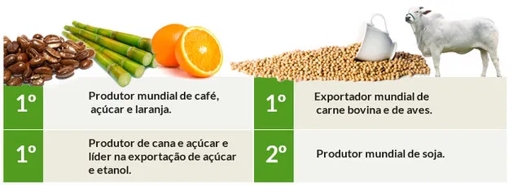

Aspectos Econômicos
A economia brasileira atual é diversificada e abrange os três setores: primário, secundário e terciário. O País há muito abandonou a monocultura ou o direcionamento unicamente para um tipo de indústria. Hoje, a economia brasileira é baseada na produção agrícola, o que faz do Brasil um dos principais exportadores de soja, frango e suco de laranja do mundo. Ainda é líder na produção de açúcar e derivados da cana, celulose e frutas tropicais. Igualmente, possui uma importante indústria de carne, com a criação e abate de animais, ocupando o posto de terceiro produtor mundial de carne bovina. Confira os dados da EcoAgro, de 2012, sobre a agroindústria brasileira
